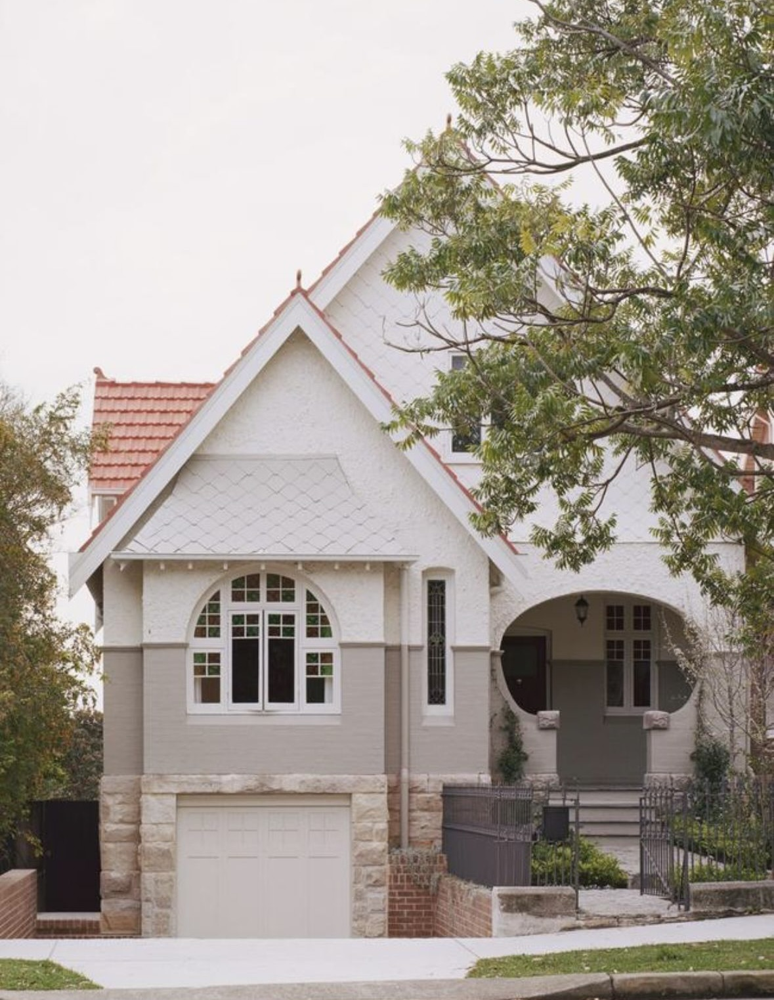
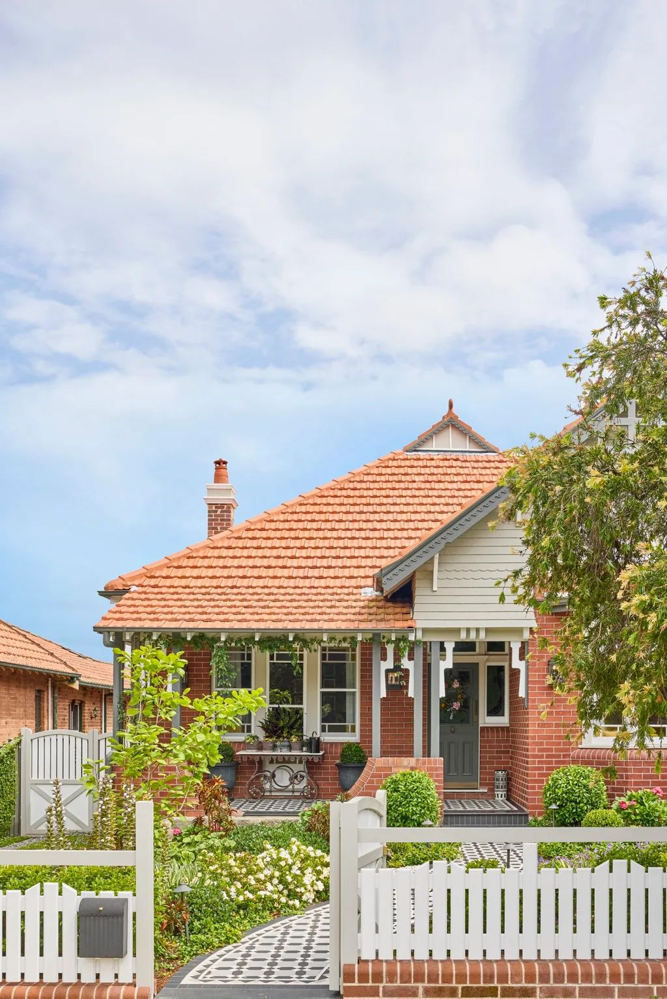
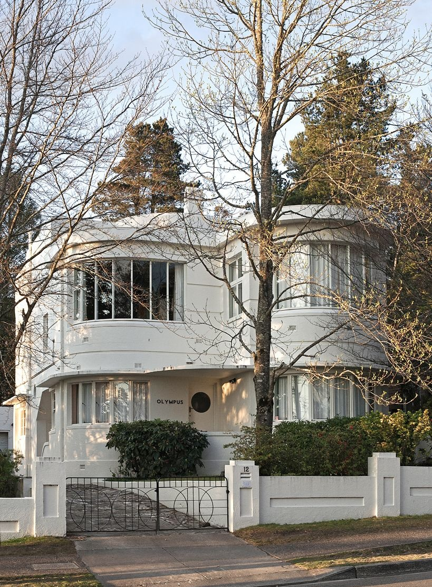
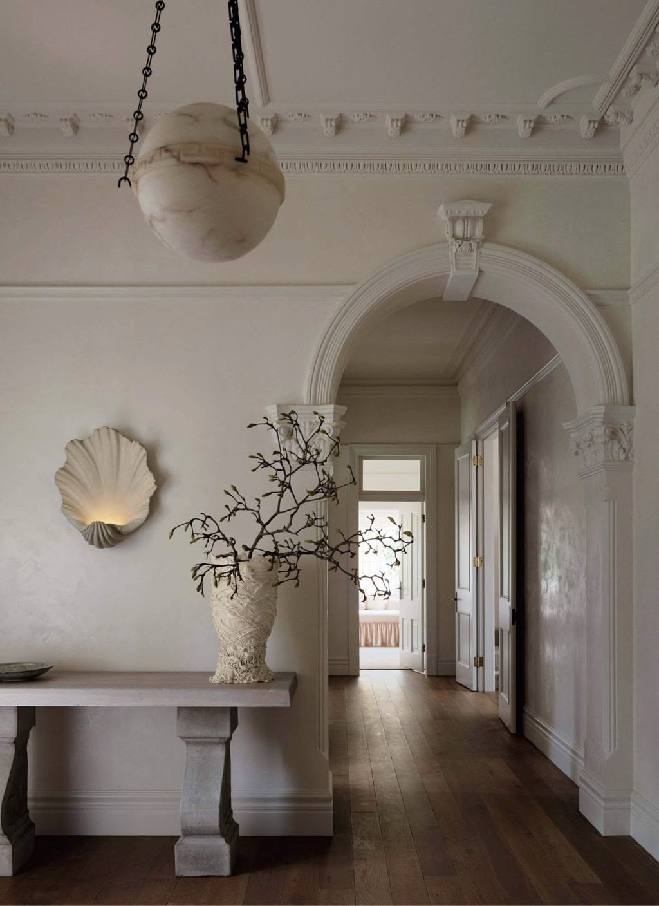
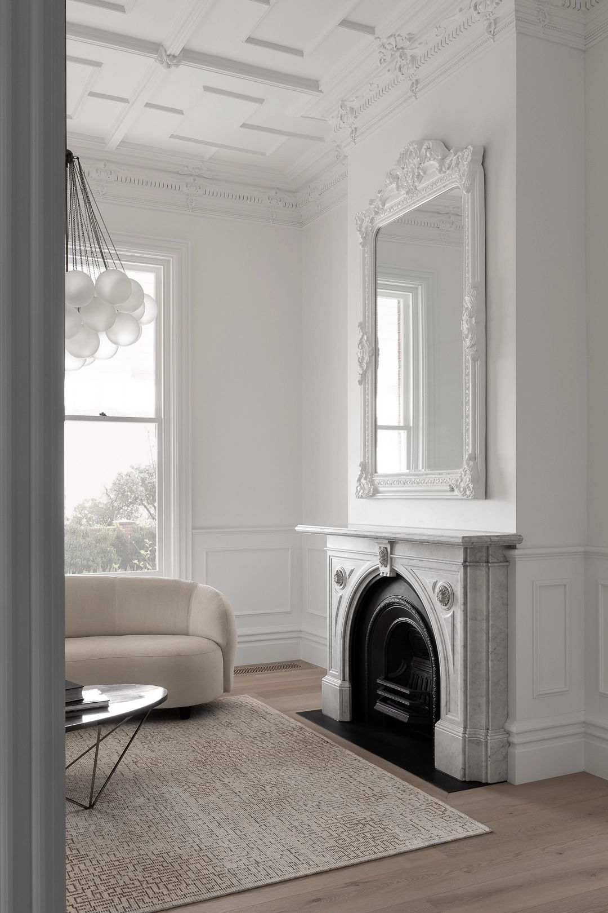
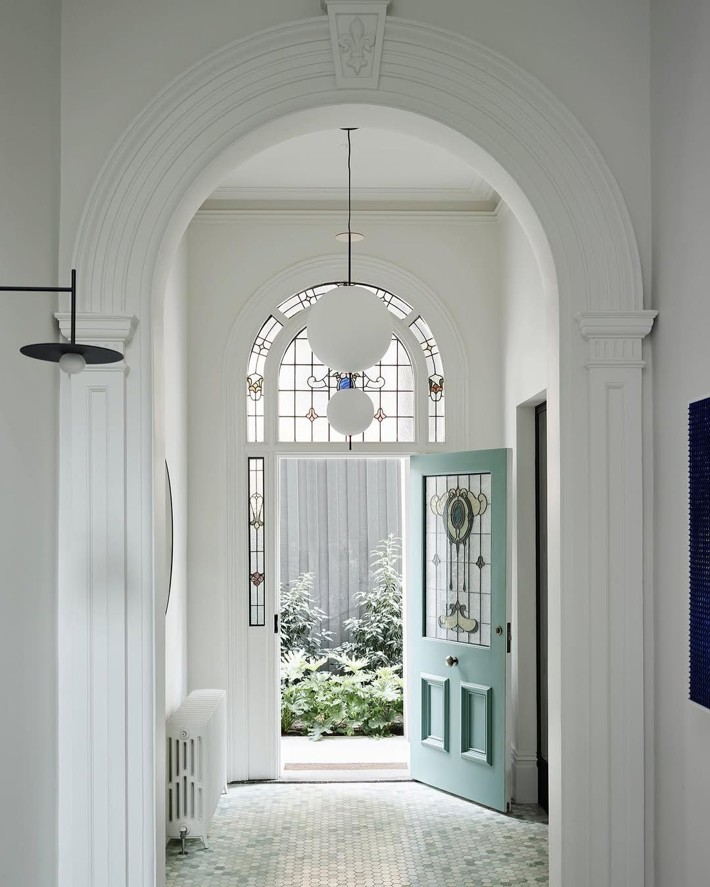
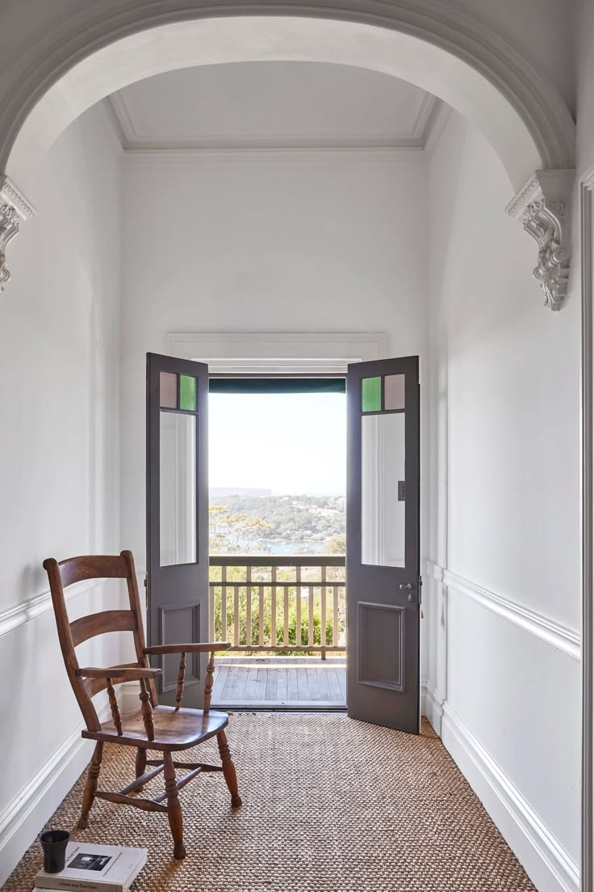
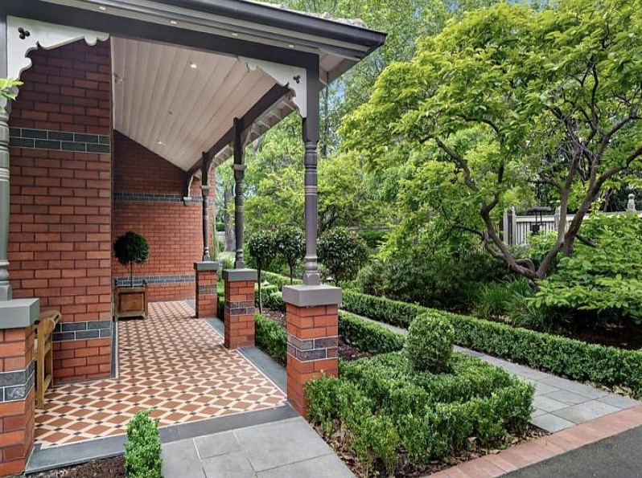

What to Look for When Purchasing a Federation Home
Federation homes are among the most sought-after properties in Sydney, and for good reason. The craftsmanship, the proportions, the details that simply cannot be replicated at any modern price point - they have an enduring appeal that holds its value in almost every market. But buying one well requires a different kind of attention than buying a newer property. There is more to assess, more to understand, and more that can be hidden beneath a fresh coat of paint.
Having worked with Federation homes across Sydney for many years, we have seen what separates a great purchase from an awkward one. The difference is almost always in the preparation - knowing what to look for before you commit, rather than discovering it afterwards.
Here is what we look for, and what we encourage our clients to consider carefully before exchange.

Tessellated tiles are one the most distinctive hallmarks of the Federation era and one of the things to assess at inspection.
What Actually Makes a Home Federation?
The term gets used loosely, so it is worth being precise. Federation architecture in Australia refers broadly to homes built between approximately 1890 and 1915. It is a distinctly Australian interpretation of influences drawn from the Arts and Crafts movement in Britain and the Queen Anne Revival style that arrived from America, adapted to the local climate and the materials available at the time.
The defining features of a Federation home are recognisable once you know what you are looking at. Face red brick, left exposed rather than rendered or painted, is perhaps the most immediately distinctive characteristic, although in recent years much of the original brick was painted and repainted in various colours appropriate at the time. Terracotta or slate roof tiles, often with decorative ridge cappings and finials, sit above steeply pitched gabled rooflines. Wide return verandahs, supported by timber or cast iron posts and decorated with elaborate timber fretwork and lacework in the gable ends, wrap around the front and side of the home. Tessellated tile paths and verandahs in geometric black and white or terracotta patterns. Inside, Baltic pine floors, high ceilings with ornate plaster cornices and ceiling roses, decorative leadlight windows in floral or geometric patterns, and in some cases pressed metal ceilings in the living areas define the interior character of the style.
It helps to understand what Federation is not, because the neighbouring styles are sometimes confused with it. Queen Anne homes pre-date Federation, built roughly from the 1880s through to the turn of the century, and are generally more elaborate in their detailing - think turrets, curved bay windows, asymmetrical rooflines with multiple intersecting gables, and a greater use of render or painted surfaces rather than exposed face brick. They tend to feel more theatrical in style. Art Deco, which followed from the 1920s through to the late 1930s, moves in entirely the opposite direction - smooth render over brick, flat or low-pitched parapets, geometric stepped forms, steel-framed windows, and a deliberate absence of the organic ornamentation that defines Federation. Where Federation is warm, textured and detailed, Art Deco is cool, streamlined and graphic.
Federation is warm brick, steep gables, elaborate fretwork, and tessellated tiles. Queen Anne is its more theatrical predecessor. Art Deco is the clean-lined modernist response that came after.
Understanding these distinctions matters practically as well as aesthetically. Heritage listings, council planning controls and even the availability of sympathetic materials and trades can differ between the styles. And knowing precisely what you are buying helps you assess it with the right eye - because the features that define a Federation home are also the ones that, when retained and celebrated, make it worth so much.

Queen Anne: rendered facades, arched windows, more theatrical and elaborate in character.

Federation: terracotta roof tiles, face red brick, verandah fretwork and a tessellated tile path framed by a classic garden setback.

Art Deco: smooth rendered brick work, curved forms, geometric parapets, no lacework.

Federation interior: ornate plaster cornice, decorative arch with corbels, timber floors and generous ceiling heights.
The Condition of the Original Features
The first thing to assess is how much of the original fabric remains. Leadlight windows, decorative plaster or pressed metal ceilings, ornate timber fretwork, timber floors, tessellated tile verandahs, decorative cornices - these are the details that give a Federation home its identity, and they are expensive and time-consuming to reproduce or reinstate if they have been removed or damaged.
A home that still has its original features largely intact is worth more, and will cost less to bring to its full potential, than one that has been stripped back over decades of unsympathetic renovation. Look closely: are the leadlight panels original or replacement? Is the pressed metal painted over or in good condition? Have the floors been covered with tiles or carpet, and if so, what is underneath?
Equally important is what has been added over the years. Not all previous renovations are sympathetic, and identifying work that will need to be addressed - or undone - is part of understanding what the purchase will actually cost you.

An original marble fireplace and ornate plaster ceiling in this condition are rare - and among the most expensive features to replicate if they have been removed.

Original leadlight in excellent condition - the fanlight arch and sidelights are a defining Federation feature worth assessing carefully at inspection.
Structural Condition and Building History
A thorough building and pest inspection is non-negotiable for a Federation property. It should be carried out by a building inspector with specific experience in heritage properties. Standard inspectors may not know what they are looking at in a home of this era, and the things that can go wrong.
Timber pest damage is common, particularly in the subfloor, roof framing and any timber in contact with masonry. Rising damp in the original brickwork is also a frequent finding - Federation homes predate damp-proof courses as standard practice, and moisture management in the original fabric requires understanding and care. The roof structure, guttering and downpipes on a home of this age will often need attention, and the condition of the original chimneys should be assessed if they are to be retained.
The things that matter most in a Federation home are rarely visible at inspection. A specialist who knows what to look for is worth every dollar of their fee.
Ask for a record of any previous works, council approvals, and any known issues disclosed by the vendor. This is not always forthcoming, but it is always worth asking.
Heritage Listing Status
Before making an offer, check whether the property is heritage listed at a local or state level. Many Federation homes in Sydney sit within heritage conservation areas, or are individually listed, which affects what you can alter, how approvals are obtained, and sometimes the materials and methods that must be used in any works.
Heritage listing is not a reason to walk away from a property - in fact, it often provides a degree of protection that benefits the value of the home over time, since it limits what can be done to the streetscape around it. But it must be understood before exchange, because it will shape your renovation brief and your timeline in ways that are important to plan for.
Your conveyancer should check the certificate of title and any Section 10.7 planning certificate for heritage notations as part of standard due diligence. If in doubt, contact your local council directly.
Orientation and Natural Light
Orientation is one of the most consequential features of any property, and one of the few things that cannot be changed. In Sydney, a north-facing rear garden is the ideal - it means the living areas at the back of the home receive sun through the day, and any outdoor entertaining space will be warm and usable for most of the year.
South-facing rear gardens are not a reason to dismiss a property, but they require more design work to bring natural light into the living areas - through skylights, borrowed light from adjacent spaces, or carefully positioned glazing on a rear extension. This is achievable, but it is worth factoring into your renovation budget and brief from the outset.
Walk through the home at different points of the day if you can and pay attention to where the light falls and where it does not. The rooms that feel dark at inspection will feel dark when you live there too, unless the plan actively addresses it.

Orientation and aspect determine how light moves through a Federation home. The arched hallway here draws the eye straight through to the view beyond.
The Bones of the Floor Plan
Federation homes are characteristically compartmentalised - formal rooms at the front, a kitchen separated from the living areas, corridors that divide the plan into discrete spaces. This is the starting point for almost every renovation brief we receive, and understanding how much flexibility the floor plan offers is an important part of assessing a property's potential.
Look at the rear of the home: is there room to extend at ground level, to add a single-storey addition that opens the living areas up? Is there space above for a second storey if the block is too small to extend outward? Check the site setbacks, any existing easements or right-of-way constraints, and whether there is an existing approved development application on the property that might affect what you can do.
The structural walls in a Federation home are generally the masonry external walls and any internal brick walls. Timber-framed internal walls are more often removable. An architect or structural engineer can advise on this early in the process, and it is worth having the conversation before committing to a purchase if the floor plan is central to your brief.
The Condition of the Services
Plumbing, electrical and drainage in a home of this era are frequently at or past their replacement point. This is rarely visible during an inspection, but it is almost always a component of any significant Federation renovation. Old galvanised steel pipes, original ceramic drainage, and electrical systems that predate modern safety standards are common findings and should be factored into your budget.
This is not a reason to avoid a Federation property - it is simply the reality of buying an older home, and it applies broadly across the category. The key is not to be surprised by it. A realistic budget for a Federation renovation will include an allowance for services upgrades, even if the scope is not yet known at the time of purchase.
The Street and the Neighbourhood
Federation homes derive a significant part of their value and character from being part of a cohesive streetscape. A street where the majority of homes retain their original facades - the brick, the gables, the verandahs, the garden setbacks - is worth more, and feels distinctly different, from one where half the properties have been demolished or rendered beyond recognition.
It is worth looking at the street as a whole, not just the property. Check what development has occurred on neighbouring sites and whether there are any approved applications nearby that might affect the amenity or character of the area. A well-preserved Federation street is a genuine asset; one under development pressure requires a clearer view of where it is headed.

The verandah is one of the most characterful elements of a Federation home - tessellated tiles, ornate fretwork brackets, cast iron posts and lush garden setbacks all contribute to the streetscape.
A Quick Reference Checklist
Before exchange, we recommend working through the following before you commit:
- Original features Check the condition and completeness of leadlight, pressed metal, fretwork, timber floors and tessellated tiles. Note anything missing or damaged.
- Building and pest inspection Engage an inspector that is familiar with heritage properties. Focus on subfloor, roof framing, rising damp and chimneys.
- Heritage listing Check the Section 10.7 certificate and title for heritage notations at local and state level.
- Orientation Establish which way the rear of the home faces and how natural light moves through the plan at different times of day.
- Floor plan potential Assess options for extension at ground level or above, and check site setbacks and easements.
- Services condition Budget for plumbing, electrical and drainage upgrades as a likely component of any renovation.
- The street Look at the streetscape as a whole and check for any nearby development activity or approvals.
Next Week
Designing with Federation Homes - Honouring the Past, Living in the Present